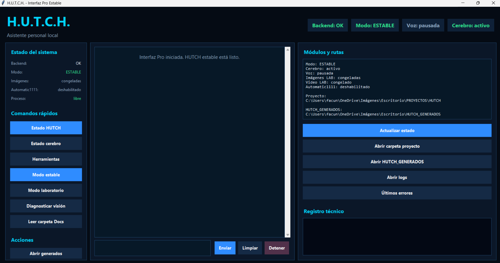

Problema
Contexto del proyecto
Muchas tareas diarias en una PC son repetitivas: abrir aplicaciones, revisar carpetas, generar documentos, ejecutar acciones, organizar información y mantener continuidad entre proyectos.
Caso de estudio
Asistente personal local inspirado en Hutch, mi bulldog inglés. El proyecto busca centralizar productividad, automatización de Windows, lectura de archivos e integración con modelos de IA locales.
Problema
Muchas tareas diarias en una PC son repetitivas: abrir aplicaciones, revisar carpetas, generar documentos, ejecutar acciones, organizar información y mantener continuidad entre proyectos.
Solución
H.U.T.C.H. centraliza comandos en una interfaz visual y modo teclado estable, con módulos para automatizar tareas, leer carpetas, generar archivos, recordar contexto e integrarse con modelos locales.
Mi participación
Diseñé la identidad del asistente, la estructura funcional, comandos principales, flujo de interacción, módulos de automatización e interfaz inicial. El proyecto continúa en evolución para mejorar estabilidad, memoria y experiencia de usuario.
Funciones
Evidencia visual
Imágenes representativas del proyecto. En proyectos privados, se muestran recursos generales sin exponer información sensible.

Tecnologías
Siguiente versión
Contacto
Puedo explicar la arquitectura, flujo de trabajo o decisiones técnicas detrás de este proyecto.